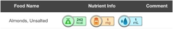
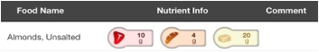

Each individual food item on the Summary screen includes 3 icons with nutrition values. The values for Calories, Sodium, and Fluid are displayed at first:

Swipe your finger left on the area of these 3 icons to view the values for Fat, Carbs, and Protein:
